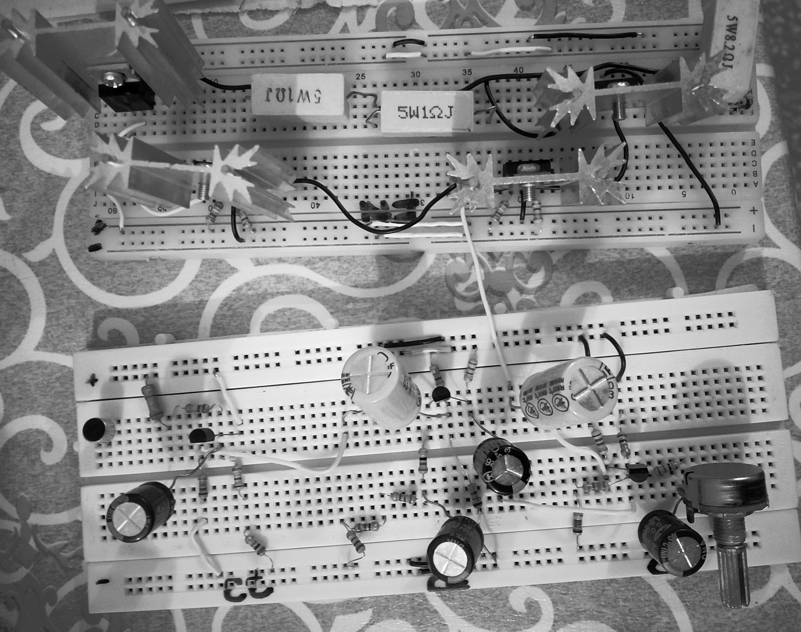

Audio Amplifier Using Discrete Components

Designed and implemented a high-fidelity discrete-component audio amplifier capable of driving an 8 Ω, 5 W speaker from a low-level microphone input, delivering clean and powerful sound output.
Architecture
- Preamplifier (3 Stages):
- Common Collector (Buffer) – high input impedance for microphone matching.
- Common Emitter – Voltage gain A_v1 = 23.
- Common Emitter – Voltage gain A_v2 = 22.
Overall gain:
A_v ≈ A_v1 × A_v2 ≈ 506
- Output Stage – Class AB Amplifier:
- Push–pull configuration (NPN TIP41, PNP TIP42).
- Quiescent current set for minimal crossover distortion.
- Large aluminum heat sinks for thermal stability.
Key Specifications
| Input Signal: | 8 mV peak (mic) |
| Output Signal: | ±4 Vrms |
| Load: | 8 Ω, 5 W speaker |
| Supply Voltage: | ±12 V |
| Total Harmonic Distortion (THD): | < 5% |
| Input Impedance: | ~100 kΩ |
| Power Output: | ~3 W |
Features
- High input impedance for optimal microphone performance.
- High voltage and power gain to efficiently drive speakers.
- Low noise and distortion for clear audio reproduction.
- Thermal stability with robust heat dissipation.
Applications
Ideal for small-scale PA systems, educational electronics projects, and embedded audio solutions.